O que você quer fazer?
Toque em um tema para ver o passo a passo e o vídeo.
Comece aqui
Reservar
Consultar
Organizar
No celular
Ajuda
Nada encontrado. Tente outra palavra ou fale com o TI: (11) 90000-0000.
Sua agenda, em um só lugar
Reserve carros e salas da Vértice com antecedência. Veja a disponibilidade da SEDE e da CENTRO. Use no computador ou no celular, com o mesmo acesso.
- Abra reservas.vertice.exemplo.
- Entre com o acesso fornecido pela empresa.
- Escolha a unidade e consulte a disponibilidade antes de combinar com o cliente.
Os vídeos deste guia usam dados fictícios. Os recursos que você vê dependem do seu acesso.
Seu primeiro acesso
Você receberá um e-mail com as instruções de acesso. A senha temporária deve ser trocada antes de usar a agenda.
- Abra o e-mail de boas-vindas e toque em Abrir agenda.
- Digite seu e-mail ou usuário e a senha temporária recebida.
- Toque em Entrar. Na tela Minha conta, crie uma senha com pelo menos 8 caracteres, incluindo letras e números.
- Repita a nova senha em Confirmar nova senha e toque em Atualizar senha.
Não compartilhe sua senha. Este guia não informa senhas nem envia e-mails.
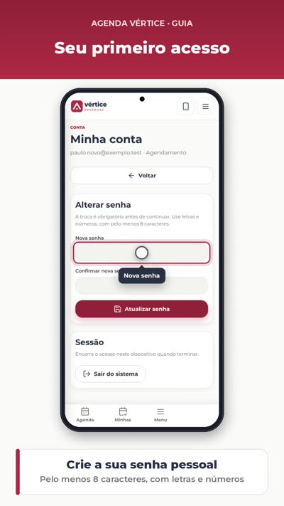
Entrar no dia a dia
Nas próximas vezes, use a senha pessoal que você criou.
- Digite seu e-mail ou usuário.
- Digite sua senha pessoal e toque em Entrar.
- Use Manter-me conectado somente em seu dispositivo particular.
- Se esqueceu a senha, abra Esqueci minha senha e siga a recuperação. Se não receber a mensagem, fale com o TI.
Em computador compartilhado, desmarque Manter-me conectado e saia ao terminar.
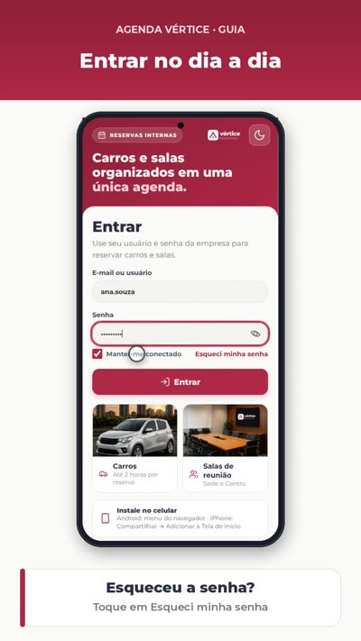
Reservar o carro
Confirme a disponibilidade antes de combinar a visita com o cliente.
- Escolha SEDE e Carro. Toque em Nova reserva ou em um horário livre.
- Confira o dia, o início e o fim. A reserva do carro tem limite de 2 horas.
- Informe o código do imóvel quando solicitado, somente com números. Acrescente uma observação útil.
- Toque em Reservar, confira o resumo e toque em Confirmar reserva.
Precisa de mais de 2 horas? Combine com o gestor e a recepção antes de reservar.
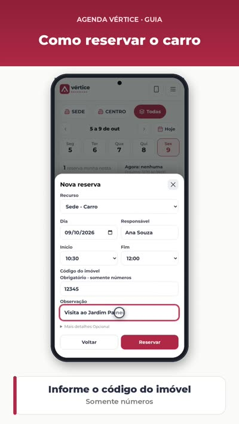
Reservar uma sala
SEDE e CENTRO têm salas distintas. Confira a unidade no nome do recurso.
- Escolha a unidade e a sala desejada.
- Toque em Nova reserva ou em um horário livre.
- Preencha dia, início, fim e observação. Mais detalhes reúne os campos opcionais disponíveis.
- Toque em Reservar, revise unidade, sala e horário e confirme.
O sistema impede sobreposição. Se o horário estiver ocupado, escolha outro horário ou recurso.
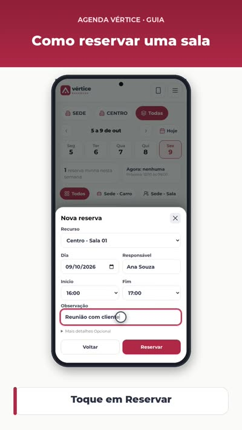
Conhecer a agenda
A agenda mostra quem reservou cada recurso e em qual horário.
- No computador, alterne Dia e Semana. Use as setas para avançar ou voltar e Hoje para retornar à data atual.
- A linha do agora indica o horário atual dentro do expediente.
- Use Ajustar para ver o conjunto e Ampliar para ler os horários com mais espaço.
- Oculte ou reabra a barra lateral. Use o botão de tema para alternar entre claro e escuro.
No celular, escolha o dia na faixa de datas e alterne Lista e Linha do tempo.
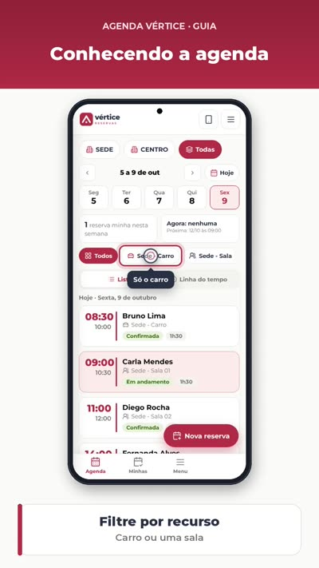
Unidades e recursos
Encontre rapidamente o carro ou a sala que você quer usar.
- Escolha SEDE, CENTRO ou Todas, conforme as unidades liberadas para você.
- Toque no recurso: Carro, SEDE Sala 01, SEDE Sala 02 ou CENTRO Sala 01.
- No celular, toque no nome do recurso para ver só ele. Toque em Todos para voltar.
- Uma unidade com cadeado e Sem acesso precisa de liberação do Departamento de TI.
Estar na CENTRO não retira acesso à SEDE. A disponibilidade depende das permissões do seu cadastro.
Ver os detalhes
Um toque na reserva abre as informações completas.
- Localize a reserva pelo recurso, pelo nome e pelo horário.
- Toque no bloco ou cartão.
- Confira responsável, unidade, início, fim e observação.
- Feche o cartão para voltar à agenda.
No computador, passar o mouse também mostra um resumo. Toque para ver tudo.
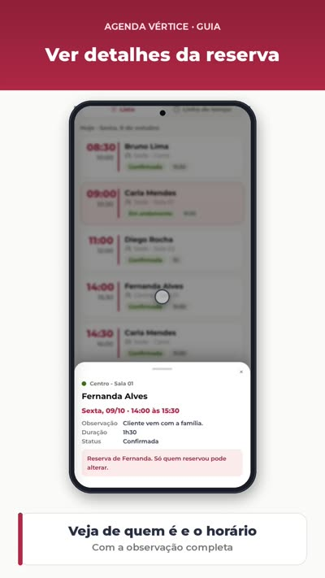
Minhas reservas
Aqui ficam as reservas em que você é responsável ou participante.
- Abra Minhas reservas no menu ou Minhas na barra inferior do celular.
- Use Próximas para acompanhar os agendamentos futuros.
- Use Histórico para consultar reservas anteriores e canceladas.
- Abra uma reserva para ver os detalhes. Nas suas reservas futuras, use Editar ou Cancelar.
Participar de uma reserva não torna você o responsável por editá-la.
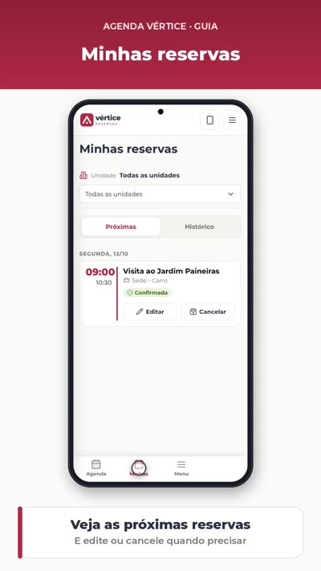
Editar sua reserva
Mudou o horário ou o plano? Atualize sua reserva para manter a agenda correta.
- Abra sua reserva na agenda ou em Minhas reservas.
- Toque em Editar.
- Ajuste o horário ou a observação e revise os campos.
- Salve e confira as informações atualizadas na agenda.
Você só altera suas próprias reservas. Horários ocupados e regras do recurso continuam valendo.
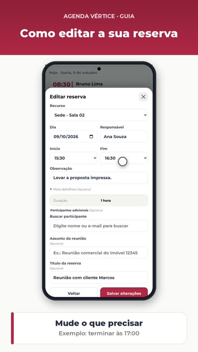
Cancelar sua reserva
Se não for usar, cancele para liberar o horário para outra pessoa.
- Abra a sua reserva.
- Toque em Cancelar.
- Leia a confirmação e confirme o cancelamento.
- Confira o horário liberado. O registro continua no histórico.
Cancelar libera o horário; não apaga o histórico. O usuário comum não exclui permanentemente registros.
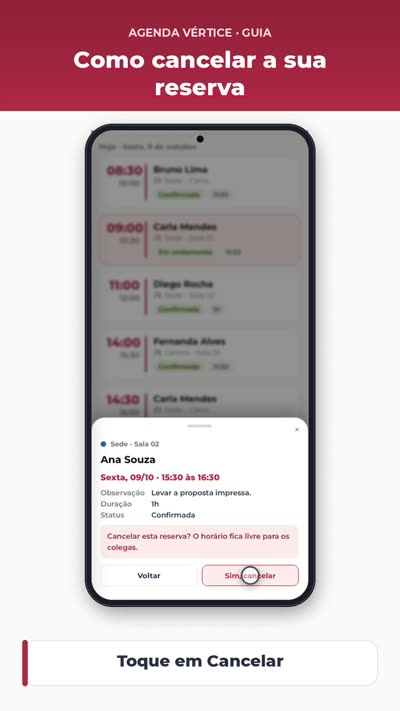
Reserva de outra pessoa
Você pode consultar os detalhes, mas não alterar a reserva de um colega.
- Toque na reserva que deseja consultar.
- Veja o responsável e o horário.
- Se precisar de uma mudança, fale com quem reservou ou com a recepção.
As ações de edição e cancelamento só aparecem nas suas reservas quando disponíveis.
Usar no celular
Os mesmos agendamentos ficam disponíveis no computador e no celular.
- Escolha o dia na faixa de datas.
- Use Lista para ler os cartões e Linha do tempo para comparar os horários.
- Toque em Nova reserva para começar um agendamento.
- Use as abas inferiores para abrir Agenda, Minhas e Menu.
Toque em um cartão para ver a observação completa e as ações disponíveis.
Instalar no Android e iPhone
Adicione a Agenda à tela inicial para abrir como um aplicativo.
- Android: abra o endereço da Agenda no Chrome e toque no menu de três pontos.
- Escolha Instalar app ou Adicionar à tela inicial e confirme.
- iPhone: abra no Safari, toque em Compartilhar e escolha Adicionar à Tela de Início.
- Confirme em Adicionar e abra o ícone Agenda Vértice na tela inicial.
Os menus podem mudar um pouco conforme a versão do celular. Os vídeos de instalação são demonstrações com as telas reais da Agenda.
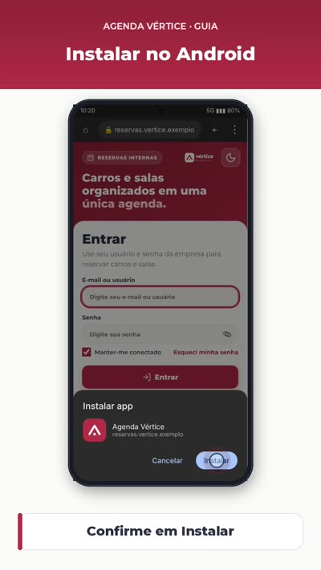
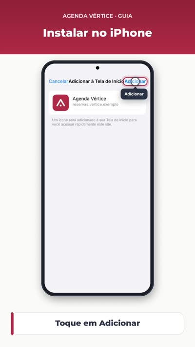
Resolver problemas comuns
Leia a mensagem da tela: ela indica o que corrigir.
- Horário ocupado: escolha outro intervalo ou outro recurso.
- Carro acima de 2 horas: ajuste o retorno ou fale com gestor e recepção.
- Unidade sem acesso: solicite liberação ao TI.
- Senha esquecida: use Esqueci minha senha. Código do imóvel inválido: digite somente números.
Se a página não carregar, confira sua conexão e tente novamente. Persistindo, envie ao TI a mensagem do erro, sem sua senha.
Falar com o TI
Suporte da Agenda: WhatsApp (11) 90000-0000.
- Para acesso, senha ou falha na tela, procure o Departamento de TI.
- Informe o que tentou fazer, a unidade e a mensagem exibida.
- Para carro por mais de 2 horas, procure o gestor e a recepção.
- WhatsApp do TI: (11) 90000-0000 · abrir conversa
Nunca envie sua senha. Se mandar um print, confira antes se ele não mostra dados pessoais desnecessários.
Perguntas frequentes
Respostas rápidas para as dúvidas mais comuns.
- Posso usar no computador e celular? Sim, com o mesmo acesso.
- Qual senha uso depois do primeiro acesso? A senha pessoal que você criou.
- Posso reservar na SEDE e na CENTRO? Sim, quando seu cadastro tiver acesso às duas.
- Posso alterar reserva de colega? Não. Fale com o responsável ou a recepção.
- Qual o limite do carro? Até 2 horas; acima disso, combine com gestor e recepção.
- Por que não consigo escolher um horário? Pode estar ocupado ou fora do funcionamento do recurso.
- Preciso informar código do imóvel? Quando o formulário solicitar; digite somente números.
- Cancelar apaga o registro? Não. Libera o horário e mantém o histórico.
- Preciso instalar o app? Não. Você também pode usar pelo navegador.
- Este guia faz reservas ou envia e-mail? Não. Os vídeos são demonstrações com dados fictícios.
Não encontrou a resposta? Fale com o Departamento de TI: (11) 90000-0000.